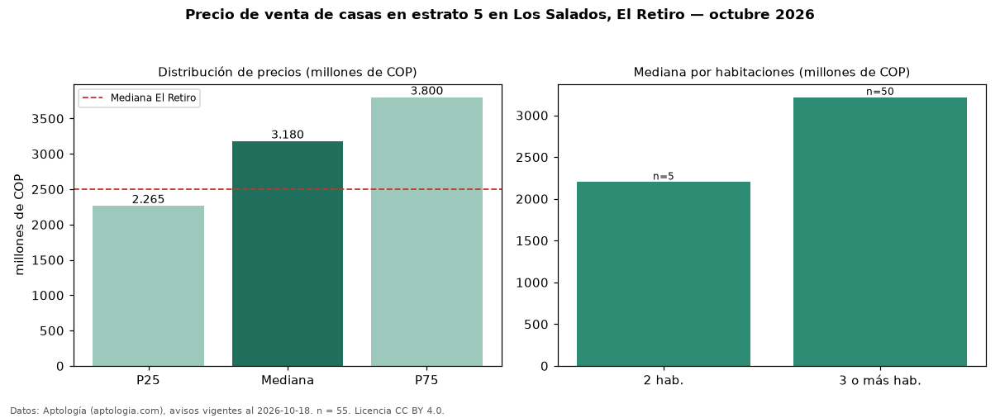

Precio de venta de casas en estrato 5 en Los Salados, El Retiro — octubre 2026
En Los Salados, El Retiro, la mediana de precio de venta de casas en estrato 5 es COP 3,18 mil millones, según 55 avisos vigentes. Frente a la mediana de toda la vivienda de estrato 5 de Los Salados (COP 1,23 mil millones, n = 130), queda 160 % por encima; este segmento reúne el 42 % de esos avisos. Por metro cuadrado, la mediana es COP 7,76 millones/m² (n = 46), 18 % por debajo del conjunto de referencia (COP 9,52 millones/m²). El área mediana anunciada es 377 m². El segmento con más oferta es el de 3 o más habitaciones (50 avisos, mediana COP 3,21 mil millones); pasar de 2 habitaciones a 3 o más habitaciones cambia la mediana +46 %. La administración mediana declarada es COP 730.000 al mes (n = 23). La mediana de todas las casas en venta de El Retiro es COP 2,50 mil millones (+27 % de diferencia). La mitad central de los avisos va de COP 2,27 mil millones a COP 3,80 mil millones (razón 1,7), una dispersión moderada. Datos: Aptología (aptologia.com), CC BY 4.0 — https://www.aptologia.com/casas-en-venta/el-retiro/los-salados. Archivos: PDF, CSV con las cifras y gráfica PNG.

| Avisos únicos | 55 |
|---|---|
| Percentil 25 | COP 2.265.000.000 |
| Mediana | COP 3.180.000.000 |
| Percentil 75 | COP 3.800.000.000 |
| Mediana por m² | COP 7.763.888 |
Fuente: avisos vigentes de portales inmobiliarios recopilados por Aptología, deduplicados (mínimo 30 avisos únicos por celda). Precios pedidos, no cerrados. Fecha: 2026-10-18.